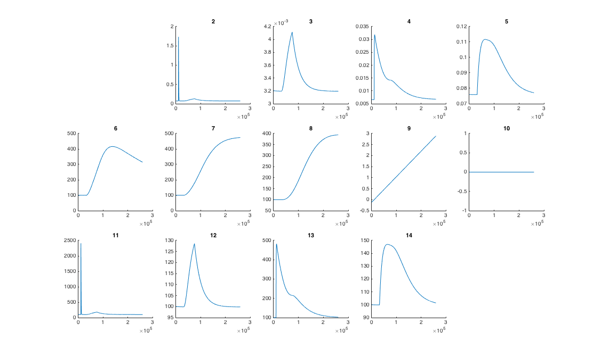

This is the readme for the XPP-Auto code associated with the paper: Zhang Y, Smolen P, Alberini CM, Baxter DA, Byrne JH (2016) Computational model of a positive BDNF feedback loop in hippocampal neurons following inhibitory avoidance training. Learn Mem 23:714-722 This ode model was contributed by Yili Zhang. This model requires XPP to be installed which is freely available from http://www.math.pitt.edu/~bard/xpp/xpp.html Usage: Download and extract this archive. Run the included ode file, for example on unix/linux type on the command line: xppaut BDNFloop-model-Zhang-2016.ode -silent After ten minutes or so a test.txt data file will be created which corresponds to the control values used in Figure 1 and 2. A simple matlab program is provided that graphs the output columns:  --- Parameter sensitivity analysis (takes hours to run): The setting '@RANGE=1, RANGEOVER=step, RANGESTEP=1100, RANGELOW=0, RANGEHIGH=1100, RANGERESET=yes, RANGEOLDIC=yes, output=test1' is only used to run parameter sensitivity analysis. You can get 1,100 data files if you remove the comment on this line. Re-running with this generates files named test1.0, test1.1, test1.2, ... In each of the data files, the value of one parameter is varied between -90% and 90%. If you only need the control case, using my current setting '@ output=test.txt' is enough.